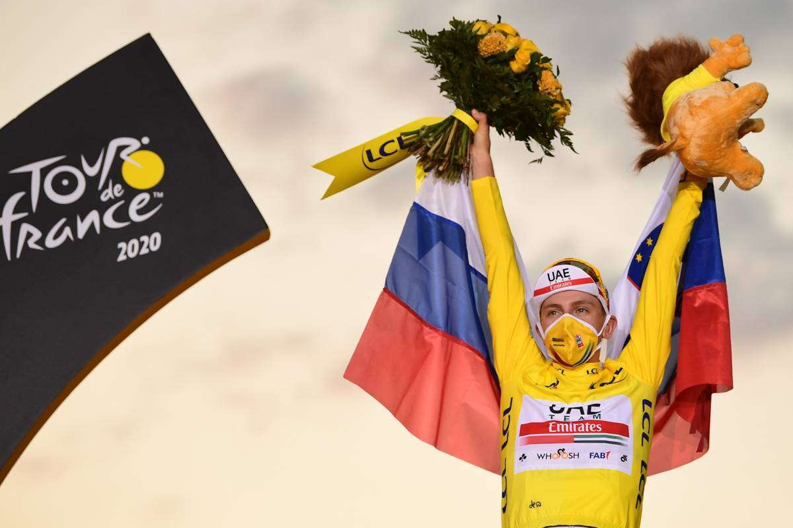

Sam Bennett and Tadej Pogacar crown it allSeptember 20 th 2020 - 19:28

The Shiba Inu is the smallest of the six original and distinct spitz
breeds of dog from Japan. A small, agile dog that copes very well with
mountainous terrain, the Shiba Inu was originally bred for hunting.